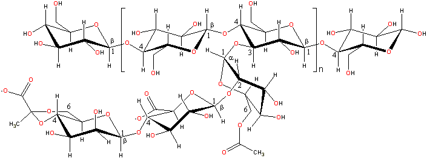

Yellow culture of Xanthomonas campestris
Xanthan gum is used to control viscosity.
Xanthan gum (E415)
is a microbial desiccation-resistant polymer prepared commercially on a large scale (>85,000 tons per year)
by aerobic submerged fermentation from Xanthomonas campestris. It is naturally produced to stick the
bacteria to the leaves of cabbage-like plants. It is relatively
expensive by weight but becoming somewhat less so. As the media
used to grow the Xanthomonas may contain corn, soy,
or other plant material, manufacturers should clarify if
any residues may remain. Reviews are given at [1724, 2400]. From the total value of xanthan produced in the world (≈ $400 million), 65% is used by the food
industry and 15% by the oil industry [2400].
Xanthan gum is an anionic polyelectrolyte (molecular mass ≈ 1,000,000 Da) with a β-(1 4)-D-glucopyranose
glucan (as cellulose) backbone with side
chains of -(3
4)-D-glucopyranose
glucan (as cellulose) backbone with side
chains of -(3 1)-α-linked
D-mannopyranose-(2
1)-α-linked
D-mannopyranose-(2 1)-β-D-glucuronic
acid-(4
1)-β-D-glucuronic
acid-(4 1)-β-D-mannopyranose
on alternating residues. Slightly less than half (≈ 40%) of the terminal
mannose residues are 4,6-pyruvated, and the inner mannose is mostly
6-acetylated (that is, the side chains are mainly β-D-mannopyranosyl-(1
1)-β-D-mannopyranose
on alternating residues. Slightly less than half (≈ 40%) of the terminal
mannose residues are 4,6-pyruvated, and the inner mannose is mostly
6-acetylated (that is, the side chains are mainly β-D-mannopyranosyl-(1 4)-(α-D-glucuronopyranosyl)-(1
4)-(α-D-glucuronopyranosyl)-(1 2)-β-D-mannopyranoside-6-acetate-(1
2)-β-D-mannopyranoside-6-acetate-(1 3)-.
Some side chains may be missing.
3)-.
Some side chains may be missing.
A representative structure of xanthan gum

[Back to Top  ]
]
Xanthan gum has a relatively reproducible specification as it is produced by fermentation. Each molecule consists of about 7000 pentamers, and the gum is less polydisperse than most hydrocolloids. Xanthan appears to order itself in a two-step process [3486]. The first step is the intramolecular conversion to single helices stabilized by ordered packing of side-chains along the polymer backbone. Step 2 is the dimerization of this single helix, probably to give the natural state of a bimolecular 51 antiparallel double helix. Atomic force microscopy demonstrates the double strand with a periodicity of 4.7 nm [2815]. It may form a very stiff intramolecular (single molecule hairpin) double-stranded helical conformation by annealing the less stiff 'natural' denatured elongated single-stranded chains. The glucan backbone is protected by the side chains which lie alongside, making it relatively stable to acids, alkalis, and enzymes (this is particularly important as preparations can contain cellulase). The use of different strains or fermentation conditions may give rise to differing degrees of acetylation and pyruvylation, which moderates the functionality.
The conversion between the ordered double-helical conformation
and the single more-flexible extended chain may occur over
hours of annealing (equilibrating) at between 40 °C - 80 °C.
The weakly bound network formed is highly pseudoplastic,
viscosity reducing considerably with any shear increase and returning
in full immediately on release. High viscosity solutions (≈ 1%) appear
gel-like but still shear-thin. The rationale for this strange behavior
is the hydrogen-bonded and entangled association between the side
chains of the highly extended molecules, which resist dissociation.
Shear-thinning with greater strain is mainly due to the conformation
of the side chains flattening against the backbone under shear,
so reducing the intermolecular interactions. [Back to Top  ]
]
Xanthan gum [2692] is mainly considered to be non-gelling and is used for the control of viscosity due to the tenuous associations endowing it with weak-gel shear-thinning properties. It hydrates rapidly in cold water without lumping to give a reliable viscosity, encouraging its use as a thickener, stabilizer, emulsifier, and foaming agent. The consistent water holding ability may be used to control syneresis and retard ice recrystallization (ice crystal growth) in freeze-thaw situations; xanthan gel strength being improved on freeze-thaw [468]. Its most important property is its very high low-shear viscosity coupled with its strongly shear-thinning character. The relatively low viscosity at high shear means that it is easy to mix, pour and swallow but its high viscosity at low shear gives good suspension and coating properties and lends stability to colloidal suspensions. Being relatively unaffected by ionic strength, pH (1 - 13), shear, or temperature, it may be used in such products as salad dressings.
Xanthan gum is capable of synergistic
interactions with galactomannans and glucomannans (for example, konjac mannan, E425;
a non-ionic relatively rigid gelling, naturally partially
acetylated, polysaccharide possessing a mixed (1 4)-linked β-D-mannopyranose/β-D-glucopyranose
backbone with about 8% β-(1
4)-linked β-D-mannopyranose/β-D-glucopyranose
backbone with about 8% β-(1 6)-glucosyl
branch points [477]).
It synergistically forms thermoreversible soft elastic gels
with locust bean gum on cooling mixtures; locust bean gum is preferred over guar gum. It has fewer galactose
side chains and the interaction (here) concerning the smooth
(1
6)-glucosyl
branch points [477]).
It synergistically forms thermoreversible soft elastic gels
with locust bean gum on cooling mixtures; locust bean gum is preferred over guar gum. It has fewer galactose
side chains and the interaction (here) concerning the smooth
(1 4)-linked β-D-mannopyranose
backbone regions. A greater proportion of guar
gum (80:20) is required for optimal synergy compared to locust bean gum (50:50) with the
associating complex not requiring segments of unsubstituted
backbone [219]. The
synergy is best at high xanthan extension and is thus reduced
by high salt and low pH. Xanthan gums may contain cellulase,
which prevents their use with cellulose derivatives.
4)-linked β-D-mannopyranose
backbone regions. A greater proportion of guar
gum (80:20) is required for optimal synergy compared to locust bean gum (50:50) with the
associating complex not requiring segments of unsubstituted
backbone [219]. The
synergy is best at high xanthan extension and is thus reduced
by high salt and low pH. Xanthan gums may contain cellulase,
which prevents their use with cellulose derivatives.
Xanthan gum is useful as a bulking agent (excipient) for drugs on its own or with other polymers. It has been added to water-based drilling fluids due to its pseudoplastic behavior and thermal stability [2394].
Interactive structures are available (Jmol). [Back to Top  ]
]
Home | Site Index | Hydrocolloids | Polysaccharide hydration | hydrogen-bonding | LSBU | Top
This page was established in 2001 and last updated by Martin Chaplin on 6 November, 2021